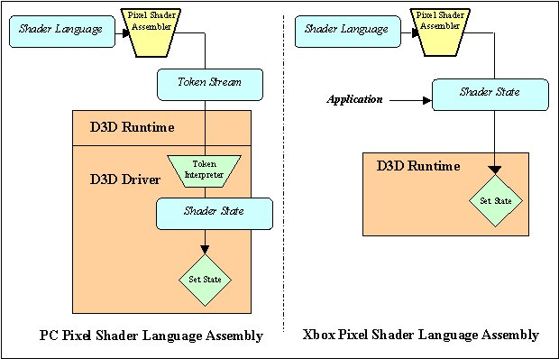

This section contains reference information for the Direct3DX pixel shader assembler. Reference material is divided into the following categories.
For additional information, see the Xbox Shader Assembler Tool (XSAsm).
The pixel shader assembler is composed of a set of registers defined along with a set of operations that can be performed on the registers. Operations are expressed as instructions composed of an operator and one or more arguments (operands).
DirectX 8.0 requires intermediate computations to maintain at least 8-bit precision for all surface formats. Both higher precision (12-bit) for in-stage math and saturation to 8 bits between texture stages are recommended. No modifiable rounding modes or exceptions are supported. Multiplication should be supported with a round-to-nearest precision to minimize precision loss.
One of the key features on the Xbox GPU custom-designed by NVIDIA® is the ability to write small programs that define how pixels are shaded. The Xbox GPU exposes several features that are not supported in Direct3D 8.0. In addition, game developers have requested the ability to set pixel shaders using either the shading language or by directly setting the registers in the pixel shader stages of the pipeline. This requires a change in the pixel shader assembler architecture as shown below:

On the PC, Direct3D must use the pixel shader language to abstract the differences between various hardware implementations. The pixel shader assembler tokenizes the language, and the tokens are passed to the driver for interpretation. The driver then sets the registers on the graphics chip appropriately. On Xbox, Direct3D only has to support one graphics chip, so it is more convenient to have the pixel shader assembler convert the pixel shader language directly to register values that can be set on the chip. This provides the added advantage for someone who is familiar with the Xbox GPU registers that they can program these registers directly without having to go through the pixel shading language.
The Xbox hardware supports up to eight general-purpose color-blending stages. These stages can use any of the color blending instructions defined by DirectX 8.0 (mov, add, sub, mul, mad, lrp, cnd, and dp3). In addition, the mma, mmc, dm, and dd instructions can also be used to perform up to three operations at once.
The Xbox hardware also has a ninth color-blending stage referred to as the final combiner. The xfc instruction can be used to specify the operation of the final combiner.
The following pixel shader instructions are added to the set already specified in Direct3D 8.0: xmma, xmmc, xdm, xdd, xfc.
The processor that executes the pixel shader has two parallel pipelines, one for vector processing (RGB), and one for scalar processing (alpha). Using these pipelines in parallel results in substantially better processor utilization and performance by reducing the total number of clock cycles required. In essence, this affects the pixel fill rate performance.
The output masks can affect how the two pipelines are allocated, but there can be ambiguities in the order of operations unless explicit pairing syntax is used. The following table illustrates the output masks and their associated pipe.
| Output mask | Pipe |
|---|---|
| .a | The operation is in the scalar pipe. |
| .rgb | The operation is in the vector pipe. |
| .rgba | The operation is in both the scalar and vector pipes. It already counts as a pair. |
Pairing is indicated by a plus sign (+) preceding the second instruction of the pair.
mul r0.rgb, t0, v0 // Component-wise multiply the colors, + add r0.a, t0, v0 // but add the alpha components.
The dot product instructions are a special case. They are vector operations and always executed in the vector pipeline. Therefore, you can specify a different instruction in the scalar pipe and still get pairing, as shown in the following pixel shader example code.
dp3 r0.rgb, t0, v0 mul r0.a, t0, v0
You cannot specify a dot product operation as a scalar instruction without a dot product operations as a vector instruction.
Direct3D 8.0 defines a saturate modifier (_sat) that can be added to an instruction to cause its output to be clamped to the range [0..1]. This modifier is not supported on the Xbox.
Direct3D 8.0 specifies that all temporary registers must be written before they can be read from. On the Xbox, the alpha portion of the R0 register is initialized to the alpha component of texture 0 if texturing is enabled for texture 0. The alpha channel of this register may be read before it is written.
As indicated in the description of the xmma instruction, the v0 and v1 registers can be specified as destination registers. Direct3D 8.0 defines these registers to be read-only. The other instructions defined by Direct3D 8.0 can also specify these registers as destinations on Xbox.
Pixel shaders that use the Xbox extensions should be identified using the xps keyword with a version of 1.1 as follows:
xps.1.1 // Xbox pixel shader